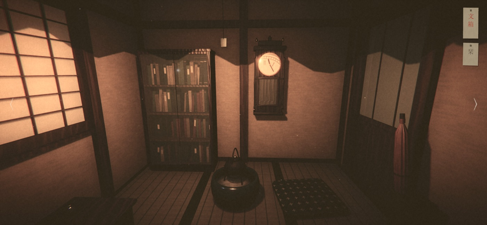
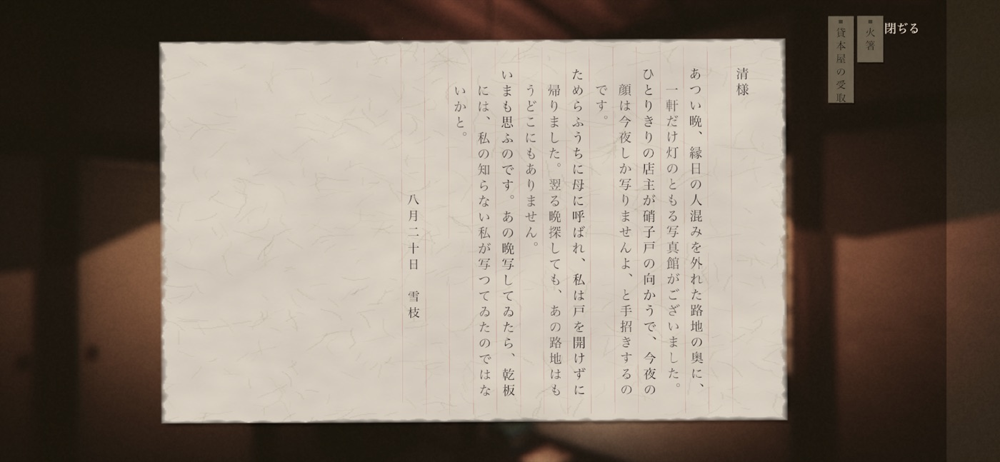

ゲームについて
大正十二年の冬。弟の初七日を終えた「私」は、遺品を引き取りに本郷の下宿を訪れます。戸の錠がひとりでに下り、出られなくなった部屋で、日記帳の表紙に描かれた少女「綴」が口を開きました。
押入れ、柱時計、火鉢、蓄音機、文机。部屋に隠された手紙を集め、手紙と詩集に込められた暗号を解いて、弟が最後まで書けなかったことを探します。
二階の六畳を抜けると、階段の下には閉めたままの写真館。書割、暗室の赤い灯り、一枚の乾板。あの夏の夜に写されなかったはずの写真を、現像します。
画面を叩くだけで遊べる3Dの脱出ゲームです。左右の矢印を叩くか、画面を左右に払って向きを変え、気になる物に触れると近づいて調べられます。持ち物は画面の右上に、集めた手紙の「文箱」と、綴を呼ぶ札は左上に並びます。


よくある質問
どうしても先へ進めない
画面左上の「綴」の札から、いま何をすべきかの手がかりを聞けます。一つ目は無料で、その先は短い動画広告を見るごとに一つずつ、最後には答えまで聞けます。
広告を外したい
「設定」の「広告を外す」から購入できます（買い切り）。購入すると、手がかりを動画なしで聞けるようになります。
広告を外す購入を復元したい
購入したときと同じApple ID、またはGoogleアカウントで、「設定」の「購入を復元」を押してください。
画面のちらつきや傷の演出が気になる
古い映画のような塵・傷・ちらつきは、「設定」の「古い映画の効き」で弱めたり、消したりできます。
続きから遊びたい
物を調べるたびに自動で記録されます。タイトルの「つづきから」で再開できます。最後まで遊ぶと記録は消え、次ははじめからになります。
実況・配信をしてもよいか
自由に行っていただけます。事前の連絡は不要で、収益化も構いません。結末まで映していただいて構いませんが、タイトルやサムネイルで結末に触れることはお控えください。詳しくはゲームのタイトル画面の「実況・配信」をご覧ください。
不具合が起きた
端末名、OSのバージョン、アプリのバージョン、起きたときの操作を添えてメールでご連絡ください。